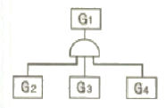
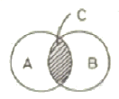
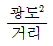
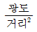
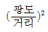
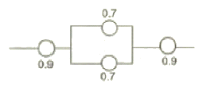
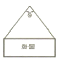
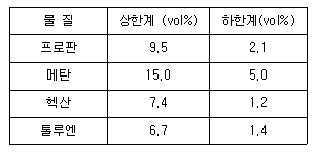
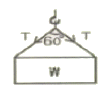

산업안전산업기사 (2008-05-11 기출문제)
1과목: 산업안전관리론
1. 연평균 근로자수가 200명인 A 사업장에 지난 1년간 9명의 사상자가 발생하였다. 이 사업장의 연천인율은 얼마인가?
- 40
- 45
- 50
- 55
(정답률: 79%)

2. 다음 중 Project Method 의 4단계를 올바르게 나열한 것은?
- 계획 → 목적 → 수행 → 평가
- 계획 → 수행 → 목적 → 평가
- 목적 → 수행 → 계획 → 평가
- 목적 → 계획 → 수행 → 평가
(정답률: 70%)
3. 다음 중 산업안전보건위원회의 구성원으로 잘못된 것은?
- 당해 사업의 대표자
- 근로자대표가 지명하는 1인 이상의 명예산업안전감독관
- 근로자대표가 지명하는 10인이내의 당해 사업장의 근로자
- 당해 사업의 대표자가 지명하는 9인이내의 당해 사업장 부서의 장
(정답률: 49%)
4. 산업안전보건법상 다음 [그림]의 안전ㆍ보건표지 명칭은?
- 화재경고
- 인화성물질경고
- 폭발성물질경고
- 산화성물질경고
(정답률: 82%)
5. 매슬로우(Maslow)의 욕구 5단계 중 전쟁, 재해, 질병 등으로부터 초래되는 위협이나 위험으로부터 자유로워지려는 욕구에 해당하는 것은?
- 자아실현의 욕구
- 사회적 욕구
- 생리적 욕구
- 안전 욕구
(정답률: 86%)
6. 다음 중 물체의 낙하 및 바래의 의한 위험을 방지 또는 경감하고, 머리부위 감전에 의한 위험을 방지하기 위한 경우 가장 적절한 안전모의 종류는?
- A
- AB
- AE
- BE
(정답률: 87%)
7. 다음 중 피로의 정신적 증상으로 가장 관련이 깊은 것은?
- 주의력이 감소 또는 경감된다.
- 작업의 효과나 작업량이 감퇴 및 저하된다.
- 작업에 대한 무감각ㆍ무표정ㆍ경련 등이 일어난다.
- 작업에 대한 몸의 자세가 흐트러지고 지치게 된다.
(정답률: 69%)
8. 다음 중 재해예방의 4원칙에 해당되지 않는 것은?
- 대책 선정의 원칙
- 손실 우연의 원칙
- 예방 가능의 원칙
- 통계 방법의 원칙
(정답률: 86%)
9. 부주의 발생 현상 중 주의의 일점 집중현상과 가장 관련이 깊은 것은?
- 의식의 과잉
- 의식의 우회
- 이식의 단절
- 의식수준의 저하
(정답률: 60%)
10. 다음 중 개인적 카운슬링(Counseling) 방법으로 가장 거리가 먼 것은?
- 직접적 충고
- 반복적 충고
- 설명적 방법
- 설득적 방법
(정답률: 57%)
11. 다음 중 산업안전보건법상 특별안전보건교육 대상 작업이 아닌 것은?
- 주물 및 단조작업
- 전압기 50볼트의 정전 및 활선작업
- 화학설비 중 반응기, 교반기, 추출기의 사용 및 세척작업
- 액화석유가스, 수소가스 등 가연성, 폭발성 가스의 발생장치 취급작업
(정답률: 75%)
12. B 사업장의 도수율이 10이고, 강도율이 1.7 이라고 하면 이 사업장의 종합재해지수(FSI)는 약 얼마인가?
- 2.74
- 3.74
- 3.87
- 4.12
(정답률: 60%)
13. 다음 중 교육 대상자수가 많고, 교육 대상자의 학습 능력의 차이가 큰 경우 집단안전 교육방법으로서 가장 효과적인 방법은?
- 문답식 교육
- 토의식 교육
- 시청각 교육
- 상담식 교육
(정답률: 89%)
14. 다음 중 허츠버그(Herzberg)의 2요인 이론에 대한 설명으로 옳은 것은?
- 위생요인은 직무내용에 관련된 요인이다.
- 동기요인은 직무에 만족을 느끼는 주요인이다.
- 위생요인은 매슬로우 욕구단계 중 존경, 자아실현의 욕구와 유사하다.
- 동기요인은 매슬로우 욕구단계 중 생리적 욕구와 유사하다.
(정답률: 76%)
15. 다음 중 피로 측정에 관한 감각기능검사의 측정 대상 항목과 가장 거리가 먼 것은?
- 뇌파
- 플리커
- 안구운동
- 체온ㆍ피부온도
(정답률: 49%)
16. 다음 중 주의의 특징으로 볼 수 없는 것은?
- 변동성
- 선택성
- 방향성
- 통합성
(정답률: 73%)
17. 모랄 서베이(Morale survey) 주요 방법 중 태도조사법에 해당하는 것은?.
- 사례연구법
- 관찰법
- 실험연구법
- 문답법
(정답률: 57%)
18. 다음 중 점검시기에 의한 안전점검의 분류에 해당하지 않는 것은?
- 성능점검
- 정기점검
- 임시점검
- 특별점검
(정답률: 66%)
19. 다음 중 토의법의 장점으로 볼 수 없는 것은?
- 사고표현력을 길러준다.
- 결정된 사항에 따르도록 한다.
- 내용에 대한 사전지식이 필요없다.
- 자기 스스로 사고하는 능력을 길러 준다.
(정답률: 81%)
20. 다음 중 맥그리거(McGregor)의 X 이론에 따른 관리처방으로 볼 수 없는 것은?
- 목표에 의한 관리
- 권위주의적 리더십 확립
- 경제적 보상체제의 강화
- 면밀한 감독과 엄격한 통제
(정답률: 55%)
2과목: 인간공학 및 시스템안전공학
21. 다음 중 점적자세를 유지할 때 진전(tremor)을 감소시킬 수 있는 방법으로 거리가 먼 것은?
- 시각적인 참조가 있도록 한다.
- 손을 심장 높이가 되도록 유지한다.
- 작업대상물에 기계적 마찰이 있도록 한다.
- 근로자가 떨지 않으려고 힘을 주어 노력한다.
(정답률: 60%)
22. 암호체계 사용상의 일반적인 지침에서 “암호의 변별성”을 의미하는 것으로 가장 적절한 것은?
- 암호화한 자극은 감지장치나 사람이 감지할 수 있어야 한다.
- 모든 암호의 표시는 다른 암호 표시와 구분될 수 있어야 한다.
- 암호를 사용할 때에는 사용자가 그 뜻을 분명히 알 수 있어야 한다.
- 두 가지 이상의 암호 차원을 조합해서 사용하면 정보전달이 촉진된다.
(정답률: 69%)
23. 다음 중 작업장의 조명 수준에 대한 설명으로 가장 적절한 것은?
- 작업환경의 추천 광도비는 5:1 정도이다.
- 천장은 80~90% 정도의 반사율을 가지도록 한다.
- 작업영역에 따라 휘도의 차이를 크게 한다.
- 실내표면의 반사율은 천장에서 바닥의 순으로 증가시킨다.
(정답률: 60%)
24. 다음 중 동작경제의 원칙으로 틀린 것은?
- 동작의 범위는 최대로 할 것
- 동작은 연속된 곡선운동으로 할 것
- 양손은 좌우 대칭적으로 움직일 것
- 양손은 동시에 시작하고 동시에 끝내도록 할 것
(정답률: 54%)
25. 어떤 음의 청취가 다른 음에 의해 방해되는 청각 현상을 무엇이라 하는가?
- debug
- masking
- vigilance
- anthropometry
(정답률: 75%)
26. 다음 중 일반적인 수공구의 설계원칙으로 볼 수 없는 것은?
- 손목을 곧게 유지한다.
- 반복적인 손가락 동작을 피한다.
- 사용이 용이한 검지만을 주로 사용한다.
- 손잡이는 접촉면적을 가능하면 크게 한다.
(정답률: 80%)
27. 반경 20cm 의 조종구(ball control)를 30° 움직였을 때 2cm 이동하였다면 통제표시비는 약 얼마인가?
- 8.25
- 7.73
- 6.27
- 5.24
(정답률: 40%)
28. 다음 중 수치를 정확히 읽어야 할 경우에 가장 적합한 시각적 표시장치는?
- 동침형
- 동옥형
- 수평형
- 계수형
(정답률: 83%)
29. 화학설비에 대한 안정성 평가 단계 중 제2단계의 주요 진단 항목이 아닌 것은?
- 건조물
- 공정계통도
- 중간 제품
- 소방설비
(정답률: 39%)
30. 다음 중 인간실수확률에 대한 추정기법에 해당하는 것은?
- DHA
- PHA
- HAZOP
- THERP
(정답률: 67%)
31. 휴먼에러 중 필요한 task 및 절차를 수행하지 않아 발생하는 에러를 무엇이라 하는가?
- time error
- omission error
- commission error
- extraneous error
(정답률: 53%)
32. 기준의 유형 가운데 체계기준 (system criteria)에 해당 되지 않는 것은?
- 운용비
- 신뢰도
- 사고빈도
- 사용상의 용이성
(정답률: 33%)
33. 원자력 산업과 같이 이미 상당한 안전이 확보되어 있는 장소에서 관리, 설계, 생산, 보전 등 광범위하고 고도의 안전달성을 목적으로 하는 시스템 해석법은?
- ETA
- FHA
- MORT
- FMECA
(정답률: 46%)
34. 다음 중 인간 눈에서 빛이 가장 먼저 접촉하는 부분은?
- 각막
- 망막
- 초자체
- 수정체
(정답률: 71%)
35. 자극들간, 반응들간, 혹은 자극과 반응조합의 관계가 인간의 기대와 모순되지 않는 것을 무엇이라 하는가?
- 검출성
- 변별성
- 양립성
- 표준화
(정답률: 59%)
36. [그림]과 같은 FT도에서 G1의 발생확률은? (단, G2=0.1, G3=0.2, G4=0.3의 발생확률을 갖는다.)

- 0.006
- 0.300
- 0.496
- 0.600
(정답률: 61%)
37. [그림]에서 A는 자극의 불확실성, B는 반응의 불확실성을 나타낸다. 이 때 C 부분이 나타내는 것은?

- 전달된 정보량
- 불안전한 행동의 량
- 자극과반응의 확실성
- 자극과 반응의 검출성
(정답률: 56%)
38. 다음 중 점광원에 적용할 때 조도를 나타낸 식으로 옳은 것은?
- 광도/거리



(정답률: 69%)
39. 다음 중 신뢰도 구조상으로 직렬구조에 해당되는 것은?
- 3발 자전거의 바퀴
- 건물내의 스프링클러
- 검사인원의 중복 투입
- 자동차의 브레이크 시스템
(정답률: 54%)
40. [그림]과 같은 시스템의 신뢰도는 얼마인가?

- 0.6261
- 0.7371
- 0.8481
- 0..9591
(정답률: 66%)
3과목: 기계위험방지기술
41. 연삭숫돌이 변형되어 연삭시 진동이 생길 경우 발생되는 현상 중 가장 관계가 깊은 것은?
- 글레이징(glazing) 현상이 생긴다.
- 숫돌이 경우에 따라 파손될 수 있다.
- 로우딩(loading) 현상이 생긴다.
- 숫돌 입자의 탈락이 잘 안된다.
(정답률: 60%)
42. 목재 가공용 둥근톱의 목재 반발 예방장치가 아닌 것은?
- 반발장비 발톱(finger)
- 분할날(spreader)
- 덮개(cover)
- 반발방지 톱(roll)
(정답률: 58%)
43. 산업안전기준에 따르면 가스집합용접장치의 배관시에 있어서 하나의 취관에 대하여 설치해야 할 안전기는 최소 몇 개 이상인가?
- 1개
- 2개
- 3개
- 5개
(정답률: 62%)
44. 산소-아세틸렌 가스용접장치에 사용되는 호스 색깔 중 [산소호스 : 아세틸렌 호스]색이 바르게 짝지어진 것은?
- 적색 : 흑색
- 적색 : 녹색
- 흑색 : 적색
- 녹색 : 흑색
(정답률: 49%)
45. 고리걸이용 와이어로프의 절단하중이 4ton일 때, 이 로프에서 사용할 수 있는 최대사용하중은 몇 kgf 인가? (단, 안전계수는 5이다.)
- 400
- 500
- 600
- 800
(정답률: 71%)
46. 달기체인의 사용제한 조치로 부적당한 것은?
- 변형이 심한 것
- 균열이 있는 것
- 길이의 증가가 제조시보다 3%를 초과 한 것
- 링의 단면지름의 감소가 링 지름의 10%를 초과한 것
(정답률: 54%)
47. 로울러 방호장치의 무부하 동작시험시 앞면 로울러의 지름이 150mm 이고 회전수가 30rpm인 로울러기를 사용하고 있다. 이 로울러기의 급정지거리는 몇 mm 이내여야 하는가?
- 157
- 207
- 257
- 307
(정답률: 47%)
48. 와이어 로프로 동일 중량물을 달아 올릴 때 다음 중 로프에 가장 힘이 크게 걸리는 각도(⍬)는?

- 30°
- 60°
- 120°
- 150°
(정답률: 46%)
49. 다음 가스용접 작업의 안전수칙 중 잘못된 것은?
- 용접하기 전에 소화기, 소화수의 위피를 확인할 것
- 보호안경을 반드시 쓸 것
- 아세틸렌의 사용압력을 1.3kgf/cm2 이하로 할 것
- 작업 후에는 아세틸렌 밸브를 먼저 닫고 산소 밸브를 닫을 것
(정답률: 68%)
50. 클러치 프레스에 부착된 양수조작식 방호방치에 있어서 클러치 맞물림 개소수가 4군데, 매분 행정수가 300 SPM일 때 양수조작식 조작부의 최소 안전거리는? (단, 인간의 손의 기준 속도는 1.6m/s로 한다.)
- 360mm
- 260mm
- 240mm
- 340mm
(정답률: 54%)
51. 다음 중 산업용 로봇에의 교시작업을 개시하기 전에 점검하여야 할 사항으로 거리가 먼 것은?
- 비상정지장치의 기능 상태
- 외부 전선의 피복 손상 유무
- 매니플레이터 작동의 이상 유무
- 비정상적인 소음 및 진동의 유무
(정답률: 54%)
52. 일반적인 연삭기로 발생할 수 있는 재해가 아닌 것은?
- 연삭 분진이 눈에 튀어 들어가는 것
- 숫돌 파괴로 인한 파편의 비래
- 가공 중 공작물의 반발
- 숫돌의 자생작용에 의한 입자의 탈락
(정답률: 70%)
53. 탁상용 연삭기에 사용하는 것으로 공작물을 연삭할 때 가공물 지지점이 되도록 받쳐주는 것은?
- 주판
- 측판
- 심압대
- 워크 레스트
(정답률: 59%)
54. 위험기계 및 위험기구 방호조치 기준상 작업자의 신체부위가 위험한계내로 접근하였을 때 기계적인 작용에 의하여 근접을 저지하는 방호장치에 해당하는 것은?
- 위치 제한형 방호장치
- 접근 거부형 방호장치
- 접근 반응형 방호장치
- 감지형 방호장치
(정답률: 39%)
55. 둥근톱 기계에서 분할날의 설치에 관한 사항이다. 옳지 않은 것은?
- 분할날 조임볼트는 이완방지조치가 되어야 한다.
- 분할날과 톱날 원주면과의 거리는 12mm 이내로 조정, 유지해야 한다.
- 둥근톱의 두께가 1.20mm이라면 분할날의 두께는 1.32mm 이상 이어야 한다.
- 분할날의 표준테이블면(승강반에 있어서도 테이블을 최하로 내릴 때의 면)상의 톱의 후면날의 1/3이상을 덮도록 하여야 한다.
(정답률: 39%)
56. 산업안전기준에 관한 규칙에 따르면 양수 조작식 방호장치에서 양쪽 누름버튼간의 내측 최단거리는 몇 mm 이상이어야 하는가?
- 100
- 200
- 300
- 400
(정답률: 75%)
57. 산업안전기준에 관한 규칙에 따라 회전축, 치차, 풀리, 플라이휠 등에 부속하는 키, 핀 등의 고정구는 어떤 형으로 설치하여야 하는가?
- 묻힘형 고정구
- 돌출형 고정구
- 개장형 고정구
- 폐쇄형 고정구
(정답률: 70%)
58. 보일러에서 사용하는 압력방출장치의 종류가 아닌 것은?
- 중추식 안전밸브
- 스프링식 안전밸브
- 지렛대식 안전밸브
- 고저수위 조절방치
(정답률: 41%)
59. 동력 프레스기의 no-hand in die 방식의 방호대책이 아닌 것은?
- 방호물이 부착된 프레스
- 가드식 장호장치 도입
- 전용 프레스의 도입
- 안전금형을 부착한 프레스
(정답률: 44%)
60. 다음 위험점 중 기계의 회전운동하는 부분과 고정부 사이에 위험이 형성되는 점은?
- 접선 물림점(trangential point)
- 물림점(nip point)
- 끼임점(shear point)
- 절단점(cutting point)
(정답률: 66%)
4과목: 전기 및 화학설비위험방지기술
61. 다음 중 방폭구조의 명칭과 표기기호가 잘못 연결된 것은?
- 안전증발폭구조 - e
- 본질안전방폭구조 - ia
- 유입(油入)방폭구조 - o
- 내압(耐壓)방폭구조 - p
(정답률: 58%)
62. 다음 중 물질안전보건자료(MSDS)의 작성항목이 아닌 것은?
- 유해ㆍ위험성
- 물리화학적 특성
- 유해물질의 제조법
- 누출사고시 대처방법
(정답률: 75%)
63. 다음 중 정전기에 의한 재해 방지대책으로 틀린 것은?
- 대전방지제 등을 사용한다.
- 공기 중의 습기를 제거한다.
- 급속 등의 도체를 접지시킨다.
- 배관 내 액체가 흐를 경우 유속을 제한한다.
(정답률: 75%)
64. 다음 [표]는 공기 중 표준상태에서 가연성 물질의 연소한계를 나타낸 것이다. 위험도가 가장 높은 것은?

- 프로판
- 메탄
- 헥산
- 톨루엔
(정답률: 60%)
65. 다음 중 정전 작업종료시 조치사항에 해당하지 않는 것은?
- 송전 재개
- 단락접지기구의 철거
- 검전기에 의한 정전확인
- 개폐기의 시건장치 제거
(정답률: 50%)
66. 착화에너지가 0.1mJ 인 가스가 있는 사업장의 전기 설비의 정전용량이 0.6nF 일 때 방전시 착화 가능한 최소 대전 전위는 약 몇 V 인가?(오류 신고가 접수된 문제입니다. 반드시 정답과 해설을 확인하시기 바랍니다.)
- 289
- 385
- 577
- 1154
(정답률: 44%)
67. 다음 중 가연성 가스의 폭발한계에 대한 설명으로 옳은 것은?
- 불활성 가스를 첨가하면 폭발범위는 좁아진다.
- 일반적으로 압력이 증가되면 폭발범위는 좁아진다.
- 일반적으로 온도가 상승되면 폭발범위는 좁아진다.
- 공기 중에서 보다 산소 중에서 폭발범위는 좁아진다.
(정답률: 59%)
68. 다음 중 전자, 통신기기 등의 전자파장해(EMI)를 방지하기 위한 조치로 가장 거리가 먼 것은?
- 접지를 실시한다.
- 차폐체를 설치한다.
- 필터를 설치한다.
- 절연을 보강한다.
(정답률: 39%)
69. 가연성 가스가 발생할 우려가 있는 지하 작업장에서의 작업시 폭발 또는 화재를 방지하기 위하여 가스의 농도가 폭발하한계 값의 몇 % 이상으로 밝혀진 경우 즉시 근로자를 안전한 장소에 대피시켜야 하는가?
- 15
- 25
- 33
- 40
(정답률: 61%)
70. 다음 중 증류탑의 일상점검항목으로 볼 수 없는 것은?
- 도장의 상태
- 트레이(Tray)의 부식상태
- 보온재, 보냉재의 파손여부
- 접속부, 맨홀부 및 용접부에서의 외부 누출유무
(정답률: 59%)
71. 다음 중 특별 제3종 접지공사의 접지저항으로 옳은 것은?
- 5Ω 이하
- 10Ω 이하
- 50Ω 이하
- 100Ω 이하
(정답률: 49%)
72. 메탄 20vol%, 에탄 25vol%, 프로판 55vol% 의 조성을 가진 혼합가스의 폭발하한계 값(vol%)은 약 얼마인가? (단, 메탄, 에탄 및 프로판가스의 폭발하한값은 각각 5vol%, 3vol%, 2vol% 이다.)
- 2.51
- 3.12
- 4.26
- 5.22
(정답률: 55%)
73. 다음 중 폭발위험장소를 분류할 때 가스폭발위험장소의 종류에 해당하지 않는 것은?
- 0종 장소
- 1종 장소
- 2종 장소
- 3종 장소
(정답률: 69%)
74. SO2 20ppm 은 약 몇 g/m3 인가? (단, SO2의 분자량은 64이고, 온도는 21℃, 압력은 1기압으로 한다.)
- 0.571
- 0.531
- 0.⑤71
- 0.⑤31
(정답률: 33%)
75. 다음 중 위험물의 분류상 금수성 물질이 아닌 것은?
- 칼슘
- 칼륨
- 나트륨
- 마그네슘
(정답률: 40%)
76. 다음 중 인체의 통전경로별 위험도가 가장 큰 것은?
- 왼손 - 오른손
- 왼손 - 등
- 오른손 - 가슴
- 오른손 - 왼발
(정답률: 73%)
77. 다음 중 반응기를 구조형식에 의하여 분류할 때 이에 해당하지 않는 것은?
- 탑형
- 회분식
- 교반조형
- 유동층형
(정답률: 56%)
78. 다음 중 전기로 인한 화재의 종류에 해당하는 것은?
- A급
- B급
- C급
- D급
(정답률: 76%)
79. 다음 중 CO2 소화기의 주된 소화효과는?
- 희석소화
- 제거소화
- 억제소화
- 질식소화
(정답률: 71%)
80. 다음 중 릴리프밸브(relief valve)의 주된 사용 대상으로 가자 적절한 것은?
- 액체
- 가스
- 기체
- 증기
(정답률: 48%)
5과목: 건설안전기술
81. 통나무 비계는 지상높이 4층 이하 또는 몇 m 이하인 건축물ㆍ공작물 등의 건조ㆍ해체 및 조립 등 작업에서만 사용하여야 하는가?
- 5m
- 12m
- 15m
- 20m
(정답률: 66%)
82. 산업안전기준에 관한 규칙에 따른 근로자의 안전한 통행을 위하여 통로에 설치하여야 하는 조명시설의 조도는?
- 30 럭스 이상
- 75 럭스 이상
- 150 럭스 이상
- 300 럭스 이상
(정답률: 77%)
83. 그림과 같이 무게 500kg의 화물을 인양하려고 한다. 이 때 와이어로프 1가닥에 작용되는 장력(T)은 약 얼마인가?

- 500 kg
- 357 kg
- 289 kg
- 144 kg
(정답률: 40%)
84. 콘크리트 거푸집을 설계할 때 고려해야 하는 연직하중으로 거리가 먼 것은?
- 작업하중
- 콘크리트 자중
- 충격하중
- 풍하중
(정답률: 69%)
85. 개착식 굴착공사의 흙막이공법 중 버팀보공법을 적용하여 굴착할 때 지반붕괴를 방지하기 위하여 사용하는 계측장치로 거리가 먼 것은?
- 지하수위계
- 경사계
- 록볼트음력계
- 변형률계
(정답률: 58%)
86. 히빙(heaving)현상이 잘 발생하는 토질 지반은?
- 연약한 점토 지반
- 연약한 사질토 지반
- 견고한 점토 지반
- 견고한 사지로 지반
(정답률: 59%)
87. 압밀에 대한 설명으로 옳지 않은 것은?
- 압밀이란 흙의 간극 속에서 물이 배수됨으로써 오랜 시간에 걸쳐 압축되는 현상을 말한다.
- 압밀시험의 목적은 지반의 침하 속도와 침하량을 추정해서 설계 시공의 자료를 얻는 데 있다.
- 일반적으로 점토는 투수계수가 작아 압밀이 장시간에 걸쳐 일어나나, 간극비가 작아 침하량은 작다.
- 압밀이 완료되면 과잉간극수압(Ue)은 0 이 된다.
(정답률: 48%)
88. 다음 중 터널굴착 작업시 시공계획의 내용이 아닌 것은?
- 터널굴착방법
- 터널지보공 및 복공의 시공방법과 용수처리방법
- 자동경보장치의 설치방법
- 환기 또는 조명시설을 하는 때에는 그 방법
(정답률: 56%)
89. 건설현장에서 거푸집 동바리를 조립할 때 준수 사항으로 틀린 것은?
- 동바리의 이음은 맞댄이음 또는 장부이음으로 할 것
- 깔옥의 사용, 콘크리트 타설, 말뚝박기 등 동바리의 침하 방지 조치를 할 것
- 동바리로 사용하는 강관(파이프서포트 제외)은 높이 3미터 이내마다 수평연결재를 3개 방향으로 설치할 것
- 강재와 강재와의 접속부 및 교차부는 볼트, 클램프 등 전용철물을 사용하여 연결할 것
(정답률: 68%)
90. 표준안전작업지침에 의하면 인력굴착 작업시 굴착면이 높아 계단식 굴착을 할 때 소단의 폭은 수평거리 얼마 정도로 하여야 하는가?
- 1m
- 1.5m
- 2m
- 2.5m
(정답률: 43%)
91. 자재 등의 물체 투하에 투하설비를 설치하거나 감시인을 배치하는 등의 조치를 취하여야 하는 최소 높이는 얼마 이상부터인가?
- 2m
- 3m
- 4m
- 5m
(정답률: 54%)
92. 차량계 건설기계를 사용하여 작업을 하는 때에 건설기계의 전도 또는 전락에 의한 근로자의 위험을 방지하기 위하여 사업주가 취하여야 할 조치사항으로 적당하지 않은 것은?
- 도로폭의 유지
- 지반의 부동침하방지
- 울, 손잡이 설치
- 갓길의 붕괴방지
(정답률: 54%)
93. 달비계에 설치되는 작업발판의 폭에 대한 기준으로 옳은 것은?
- 20cm 이상
- 40cm 이상
- 60cm 이상
- 80cm 이상
(정답률: 69%)
94. 와이어로프나 철선 등을 이용하여 상부지점에서 작업용 발판을 매다는 형식의 비계로서 건물 외벽도장이나 청소 등의 작업에서 사용되는 비계는?
- 브라켓 비계
- 달비계
- 이동식 비계
- 말비계
(정답률: 71%)
95. 높이 2m 이상인 작업발판의 끝이나 개구부 등에서 추락을 방지하기 위한 설비로 가장 거리가 먼 것은?
- 안전난간
- 덮개
- 방호선반
- 울타리
(정답률: 47%)
96. 거푸집동바리의 조립 또는 해체작업시 준수사항으로 틀린 것은?
- 보 슬라브 등의 거푸집동바리 등을 해체할 때에는 낙하, 충격에 의한 돌발 재해를 방지하기 위하여 버팀목을 설치하는 등의 조치를 할 것
- 공구 등을 올리거나 내릴 때에는 달줄, 달포대 등을 사용할 것
- 비ㆍ눈 그 밖의 기상상태의 불안정으로 날씨가 몹시 나쁠 때 작업을 중지시킬 것
- 크레인 등 양중기로 철근을 운반할 경우에는 중앙의 1개소 이상을 묶어 수평으로 운반할 것
(정답률: 69%)
97. 가설 통로 경사로의 설치 기준으로 틀린 것은?
- 경사로의 촉은 최소 90cm 이상이어야 한다.
- 발판 촉은 40cm 이상이어야 한다.
- 비탈면의 경사각은 30° 이내이어야 한다.
- 경사로의지지 기둥은 5m 이내로 설치한다.
(정답률: 40%)
98. 채석작업시 붕괴 또는 낙하에 의해 근로자에게 위험의 우려가 있을 때 설치해야 하는 것은?
- 건널다리
- 천막덮개
- 손잡이
- 방호망
(정답률: 67%)
99. 지면을 절삭하여 평활하게 다듬는 장비로서 노면의 성형과 정지작업에 가장 적당한 장비는?
- 모터 그레이더
- 백호
- 트랜처
- 클램쉘
(정답률: 50%)
100. 항타기 또는 항발기를 조립할 때 점검하여야 하는 사항과 거리가 먼 것은?
- 권상기의 설치상태의 이상유무
- 본체연결부의 풀림 또는 손상의 유무
- 이동제동장치 기능의 이상유무
- 권상장치의 브레이크 및 쐐기장치 기능의 이상유무
(정답률: 43%)
연천인율 = (9 / 200) × 1,000 = 45
따라서 정답은 "45"입니다.